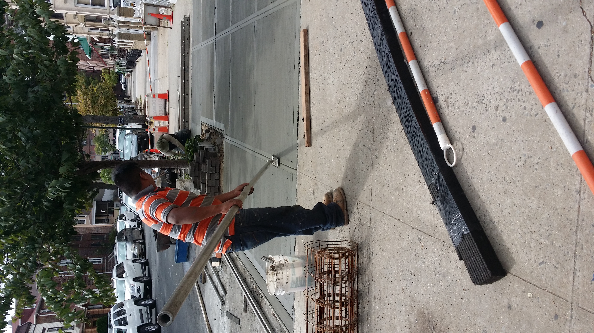
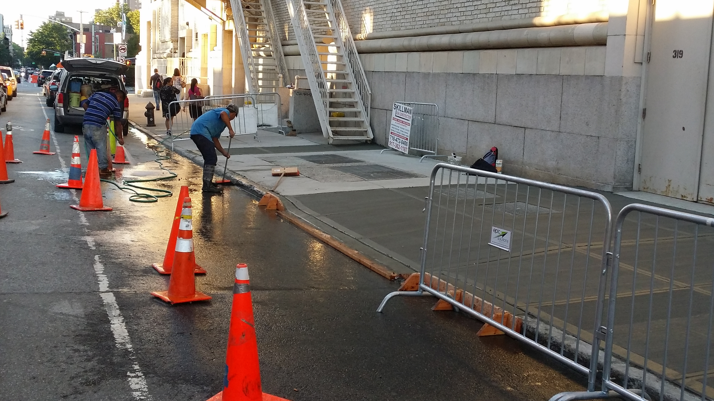
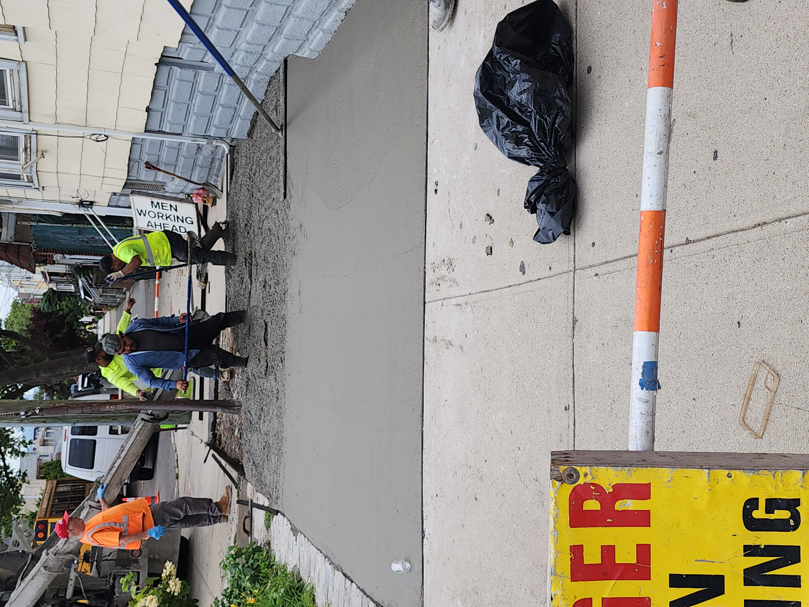

What Is Concrete Sidewalk Installation & Repair?
Concrete sidewalk installation and repair involves building new walkways or fixing existing ones to ensure safe, durable, and visually appealing paths around your property. Properly installed sidewalks prevent hazards, improve accessibility, and enhance curb appeal.
Why Is Concrete Sidewalk Installation & Repair Important?
- Provides safe walking surfaces for residents and visitors
- Prevents trips, falls, and liability issues
- Enhances the property’s curb appeal and value
- Extends the lifespan of existing walkways
- Allows for proper drainage and reduces water damage
Steps in a Concrete Sidewalk Project
- Inspection & Assessment: Check existing sidewalks for cracks, uneven surfaces, or drainage issues.
- Preparation: Excavate the area and set forms for the new sidewalk.
- Pouring & Leveling: Pour concrete, level the surface, and smooth for a clean finish.
- Curing: Allow the concrete to properly set and gain strength.
- Final Inspection: Ensure smoothness, proper slope, and durability.
Signs You May Need Sidewalk Installation or Repair
- Cracks, chips, or broken sections
- Uneven or sinking areas
- Water pooling or poor drainage
- Visible wear from weather or heavy use
- Outdated or unsafe walkways
Note: Timely installation and repairs improve safety, maintain property value, and ensure your sidewalks last for years to come.



.jpg)


Back to Services